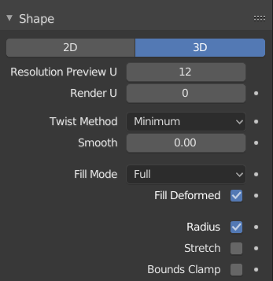
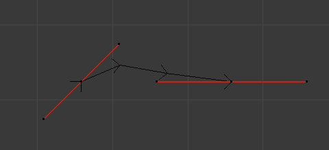
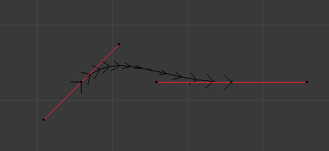

形状¶

形状面板。¶
- 维数
默认情况下，新曲线被设置为3D，这意味着控制点可以放置在3D空间的任何位置。曲线也可以设置为2D，这将控制点约束在曲线的局部XY轴上。
- U向预览/渲染分辨率
分辨率 属性定义了在每对控制点之间计算的点的数量。通过分别增大和减小分辨率，可以使曲线变得或多或少平滑。 U向预览 设置确定3D视图中的分辨率，而 U向渲染 设置确定曲线的渲染分辨率。如果 U向渲染 设置为0(0)，那么 U向预览 设置用于3D视图和渲染的分辨率。
分辨率为3的曲线。¶
分辨率为12的曲线。¶
- 扭曲方法
三维曲线具有不在曲线的局部XY平面上的控制点。这给曲线一个扭曲，它可以影响曲线的法线。可以从选择菜单中的 最小值 、 切向 和 Z朝上 选项中选择，从而更改曲线的扭曲度的计算方式。
具有最小值扭曲的曲线。¶
具有切向扭曲的曲线。¶
- 平滑
以交互方式从曲线中移除扭曲。 如果曲线因过度扭曲而出现明显的“扭结”，则此功能非常有用；将网格转换为曲线时可能会出现这种情况。

- 填充形变
应用所有可能使曲线形变的修改(即形态键和修改器)后填充曲线。
- 半径
使形变物体按设定的曲线半径缩放。可在当使用曲线作为路径或使用 曲线函数修改器 时使用。
- 拉伸
拉伸 曲线选项允许网格物体拉伸或挤压整个曲线。要获得预期的结果，请将其与 边界钳制 选项一起使用。当在使用 曲线函数修改器 时使用。
- 边界钳制
启用此选项时，物体和网格沿形变轴的偏移量将被忽略。这对于 拉伸 选项或使用负轴时非常有用。当使用 曲线函数修改器 时使用。